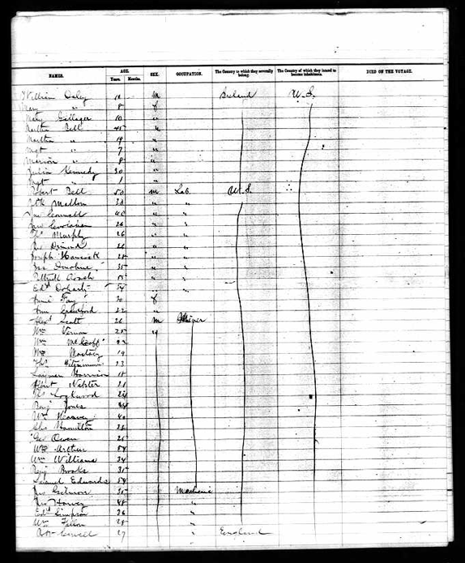
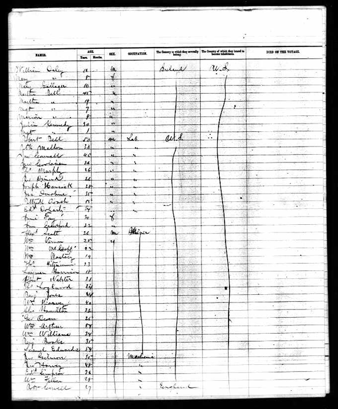
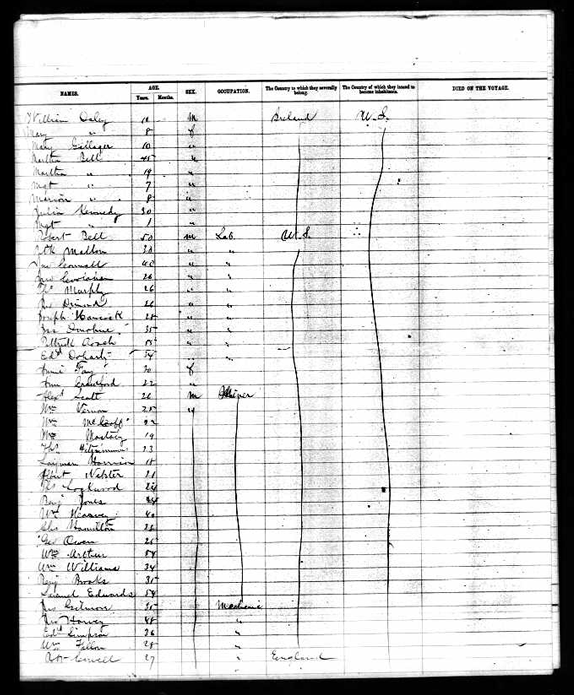

Ancestry.com
Details
1920 United States Federal Census record for John Fitzgerald Kennedy
Actions
Save
More Options
View/Add alternate info
Report image problem
View printer friendly
View blank census form
Find others researching John F Kennedy
Compare this record
facebook
twitter
email
Share
Index
About
Comments
Recent Activity
Find more like this

index
about
comments
recent
more
1
2
 
